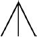
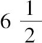
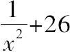
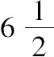
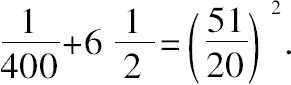
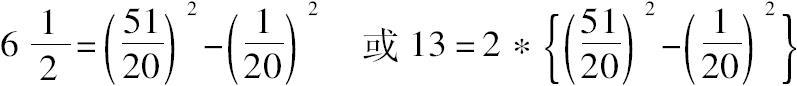
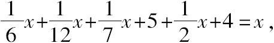

历史学家仅可以确定丢番图（Diophantus）活跃于公元3世纪，从他去世不久，一位友人留下的一个希腊数学问题中我们可以了解到他生平的下列事实：
这是此处所选录的丢番图巨著《算术》的经典例型，请解答此关于丢番图年龄的谜语（答案见文末）．
那些丢番图引用过的著作，以及引用过丢番图的著作是界定丢番图生存年代的可信证据．在他的著作《多角数》（De polygonis numeric）中，丢番图引用了许普西克勒斯（Hypsicles of Alexandria，约公元前175年）关于多角数的定义，而赛翁（Theon of Alexandria，约公元390年）的书又引用了丢番图的著作．这样界定的范围是公元前175年到公元390年．另外，M.C.普赛勒斯（Psellus，1018~约1078，学者，拜占庭行政长官）写过一封信，提到劳迪赛亚（Laodicea，在今土耳其西部）的主教阿纳托利厄斯（Anatolius，约公元270年）曾将他所著的关于埃及计算方法的小册子献给丢番图，因此两人应同时代或丢番图稍早，据此史学家断定丢番图的活跃时期是公元250年前后．
《算术》的开篇，丢番图同样也有一段献词：
丢番图献词提到的迪奥尼舍斯（Dionysius）极可能指的是247~264年曾做过亚历山大主教的迪奥尼舍斯．亚历山大大帝于公元前331年建立亚历山大城后，它很快成为古希腊文化中心．在公元3世纪，亚历山大城常是新生的基督社团和原有的罗马，希腊教团的冲突之地．在260年代早期，亚历山大城每日可见对基督徒的迫害，进城大道常被殉难者的尸体所阻塞，饥饿病疫困扰着城市．在此背景下，令今人好奇的是丢番图和迪奥尼舍斯之间的友谊，是否意味着丢番图是一位基督徒．
《算术》不是一本演绎著作，有别于毕达哥拉斯和欧几里得论证传统，譬如论证没有最大素数的类似问题《算术》中是完全没有的．取而代之，《算术》是一本代数或数论方面的算法著作．相比较古希腊传统，《算术》更多地根植于古埃及，巴比伦，印度数学之中．
在前言中，丢番图承诺《算术》包含13卷．然而，流传至今希腊文本仅剩6卷．在西方著名的第一位女数学家许帕媞娅（Hypatia），亚历山大赛翁的女儿，曾最早评注过《算术》．
在415年许帕媞娅遭到一群狂热基督教徒的野蛮杀害，同时他们焚烧了亚历山大大图书馆，毁灭了这座最大的古典思想宝库．按照10世纪休达的百科全书《词典》，许帕媞娅曾为丢番图《算术》，阿波罗尼奥斯《圆锥曲线论》和托勒密《大汇编》做过评注．
近代西方曾有过的《算术》各种版本的母本均源自一本手稿，M.C.普赛勒斯曾在君士坦丁堡见过该手稿，也许这个手稿是在毁灭亚历山大大图书馆中幸免下来的．然而，1968年，史学家们发现了一本阿拉伯文手稿本，包含《算术》另外4卷内容，该手稿发现于伊朗东北部的马什哈德圣地图书馆．阿拉伯文本的翻译者是古斯塔伊本卢加，活跃于860年前后，是一位希腊血统的基督徒，生于叙利亚的太阳城．
在前言中，丢番图开始便给出从二次幂到六次幂的各种不同类型数的定义和记号；亦即：
他继续道：
这个符号可能同用在希腊字末尾的那个希腊字母σ是一样的，丢番图用来表示未知量并称作“题中的数”．（本文按当代习惯记为x）
丢番图是首位引入减法符号的数学家．它有点像：

也许是希腊动词“缺失”的缩写，该词的前两个希腊字母是Λ和Ι．丢番图没有引入加法和乘法符号．他简单地把各项并列在一起表示相加．他也不需要乘法符号因为系数总是确定的整数或分数．
对于丢番图，正项表示“添加”；负项表示“缺失”．在他的问题中，正项总呈现在负项之前．他给出了乘法的两个法则：
对于丢番图，如果前面没有被减的正量，负项是不会单独存在的．他认为导致负解的方程是无意义的，更不会考虑无理解或虚数解了．
丢番图的评注者都感到失望，无法把《算术》中的问题真正系统分类．卷Ⅰ包含有确定解的代数方程．卷Ⅱ到卷Ⅴ主要涉及不定方程问题，其表达式由两个及其以上一次或二次变量组成，然后使其等于平方数或立方数．卷Ⅵ解答直角三角形问题，使其边长的一次或二次函数为平方数或立方数，一般要得出各边长的有理数答案．
因每道题均有其特殊解法，此处仅对卷Ⅴ，问题9分析如下，该题是：
限定所给定的数是整数时，丢番图挑逗性地写道：
此限制条件表明丢番图知道，整数的平方除以4余数不会为3．（简单将0，1，2，3平方后除以4检验所得余数即证）没有其他条件，丢番图直接将给定的数取为6，

，必须对它加上一个小的分数，从而使其为一个平方数，或者，将其乘以4，则必须使
为一个平方数，即26x2+1=平方数，不妨设=（5x+1）2，由此x=10．乘2能消去分数，但2不是平方数，因此，丢番图乘平方数4．将变为26x2+1是常见的代数步骤．但将26x2+1另外表述成（5x+1）2是纯丢番图的方法，这是为了让x2项尽量接近26x2，因他要求的两个数之和是1．此步之后，他道：

成为平方数，须加上1/400，即
为便于理解，可改写成下列等式

丢番图下一步用x替代1/20，他道：
用代数公式依次可展开成121x2+44x+4和9-54x+81x2，所以
前言开始的谜语，相当于解方程

其解为x=84．因此，